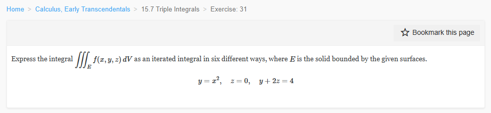
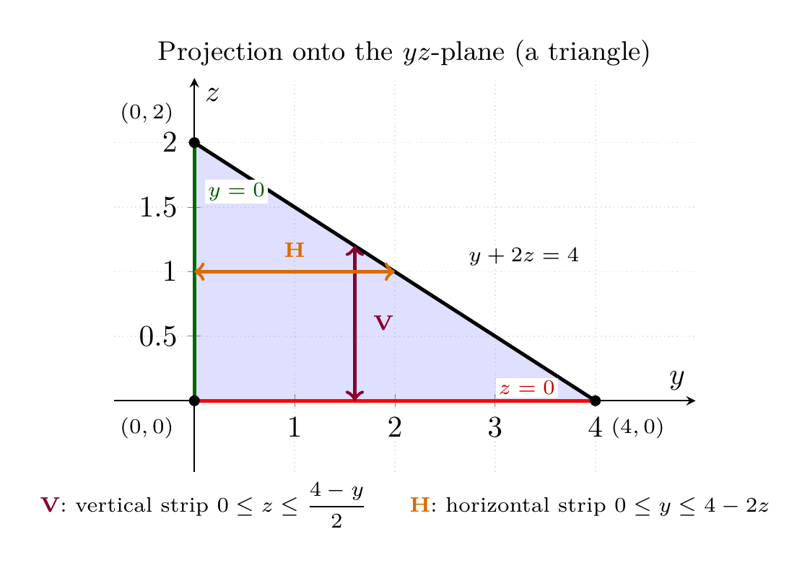

Please solve the problem in the following image.
(Image `20260928_000248_903412_utc_0800_0.png`. Alt text: Image: human_20260928_000248_903412_utc_0800)

20260928_000248_903412_utc_0800_0.png
End of problem
Answer
## Problem
Express $\displaystyle\iiint_E f(x,y,z)\,dV$ as an iterated integral in **six** different ways, where $E$ is the solid bounded by
$$y=x^2,\qquad z=0,\qquad y+2z=4.$$
---
## Step 1 — Turn the surfaces into inequalities
Each surface is a "wall" of the solid; the trick is to read each one as an inequality that says *which side of the wall the solid lies on*.
| surface | solved for | the solid is on the side |
|---|---|---|
| $y=x^2$ (parabolic cylinder, rulings $\parallel z$-axis) | $y\ge x^2$ | **inside/above** the parabolic trough |
| $z=0$ (the $xy$-plane) | $z\ge 0$ | **above** the $xy$-plane |
| $y+2z=4$ (plane, rulings $\parallel x$-axis) | $z\le \dfrac{4-y}{2}$, i.e. $y\le 4-2z$ | **below/toward the origin** |
So the master description of the region is
$$E=\left\{(x,y,z):\; y\ge x^2,\quad z\ge 0,\quad y+2z\le 4\right\}.$$
Two consequences you will use constantly:
- Since $y\ge x^2\ge 0$ and $y\le 4-2z\le 4$, we always have $0\le y\le 4$ and $0\le z\le 2$.
- Solving $y=x^2$ together with $y+2z=4$ (eliminate $y$) gives the **ridge curve** where the two curved walls meet:
$$z=\frac{4-x^2}{2}=2-\frac{x^2}{2},\qquad y=x^2.$$
At $x=0$ this reaches its highest point, the **apex** $(0,0,2)$; it drops to $z=0$ at $x=\pm2$.
---
pgfplots_0.png
---
## Step 2 — The three shadows (this is really the whole problem)
An iterated integral $\int\!\int\!\int$ is built by choosing which variable is done **first** (the inner differential), which **second**, and which **last**. The outer two variables always range over the *projection* ("shadow") of $E$ onto the corresponding coordinate plane. So before writing anything, find all three shadows.
**(a) Shadow on the $xy$-plane** — set $z=0$ in $y+2z\le4$: $\;x^2\le y\le 4$. Hence $x^2\le 4$, so $-2\le x\le 2$.
**(b) Shadow on the $xz$-plane** — eliminate $y$: we need a $y$ with $x^2\le y\le 4-2z$, which exists iff $x^2\le 4-2z$. Hence $-2\le x\le2,\;0\le z\le 2-\tfrac{x^2}{2}$.
**(c) Shadow on the $yz$-plane** — eliminate $x$: $y=x^2$ collapses to its smallest allowed value $y=0$, so $0\le y,\;z\ge0,\;y+2z\le4$ — a **triangle** with vertices $(0,0),(4,0),(0,2)$.
Notice the asymmetry that makes this exercise interesting: $x$ appears **only** as $x^2$, so whenever $x$ is integrated the limits come with $\pm\sqrt{\;\cdot\;}$; while $y$ and $z$ are linked by the *linear* relation $y+2z=4$, so their limits stay linear.
---
\documentclass[border=10pt]{standalone}
\usepackage{amsmath}
\usepackage{pgfplots}
\usepgfplotslibrary{fillbetween}
\pgfplotsset{compat=1.18}
\begin{document}
\begin{tikzpicture}
\begin{axis}[width=8.4cm, height=6.2cm, axis lines=middle,
xlabel={$y$}, ylabel={$z$}, xmin=-0.8,xmax=5.0, ymin=-0.55,ymax=2.5,
xtick={1,2,3,4}, ytick={0.5,1,1.5,2},
grid=major, grid style={gray!20,densely dotted}]
\addplot[name path=PL, blue!45, opacity=0, domain=0:4, samples=2] {(4-x)/2};
\addplot[name path=AX, blue!45, opacity=0, domain=0:4, samples=2] {0};
\addplot[fill=blue!45, opacity=0.28] fill between[of=PL and AX];
\addplot[very thick, domain=0:4, samples=2] {(4-x)/2};
\node[font=\scriptsize, anchor=south west, fill=white, inner sep=1pt] at (axis cs:2.7,1.02) {$y+2z=4$};
\addplot[red, very thick, domain=0:4, samples=2] {0};
\draw[green!40!black, very thick] (axis cs:0,0) -- (axis cs:0,2);
\node[font=\scriptsize, text=green!35!black, anchor=west, fill=white, inner sep=1pt] at (axis cs:0.1,1.62) {$y=0$};
\node[font=\scriptsize, text=red!80!black, anchor=west, fill=white, inner sep=1pt] at (axis cs:3.0,0.10) {$z=0$};
\draw[<->, purple!70!black, very thick] (axis cs:1.6,0) -- (axis cs:1.6,1.2);
\node[font=\scriptsize\bfseries, text=purple!70!black, anchor=west] at (axis cs:1.68,0.6) {V};
\draw[<->, orange!85!black, very thick] (axis cs:0,1.0) -- (axis cs:2.0,1.0);
\node[font=\scriptsize\bfseries, text=orange!85!black, anchor=south] at (axis cs:1.0,1.03) {H};
\addplot[only marks, mark=*, mark size=1.6] coordinates {(0,0) (4,0) (0,2)};
\node[font=\scriptsize, anchor=north east] at (axis cs:-0.1,-0.05) {$(0,0)$};
\node[font=\scriptsize, anchor=north west] at (axis cs:4.05,-0.05) {$(4,0)$};
\node[font=\scriptsize, anchor=south east] at (axis cs:-0.1,2.06) {$(0,2)$};
\end{axis}
\node[font=\small, align=center, anchor=south] at (current bounding box.north) {Projection onto the $yz$-plane (a triangle)};
\node[font=\scriptsize, align=left, anchor=north] at (current bounding box.south)
{\textcolor{purple!70!black}{\textbf{V}}: vertical strip $0\le z\le\dfrac{4-y}{2}$\qquad
\textcolor{orange!85!black}{\textbf{H}}: horizontal strip $0\le y\le 4-2z$};
\end{tikzpicture}
\end{document}

pgfplots_3.png
---
## Step 3 — Build the six orders one at a time
**Recipe:** fix the outer pair from the appropriate shadow, then shoot a line in the direction of the innermost variable and record where it enters and leaves $E$.
**1. $dz\,dy\,dx$** (shadow $xy$, vertical strip first, then $z$ up to the plane $z=\frac{4-y}{2}$):
$$\int_{-2}^{2}\!\int_{x^2}^{4}\!\int_{0}^{(4-y)/2} f\,dz\,dy\,dx$$
**2. $dz\,dx\,dy$** (same shadow $xy$, but horizontal strip: $-\sqrt y\le x\le\sqrt y$):
$$\int_{0}^{4}\!\int_{-\sqrt y}^{\sqrt y}\!\int_{0}^{(4-y)/2} f\,dz\,dx\,dy$$
**3. $dy\,dz\,dx$** (shadow $xz$, vertical strip $0\le z\le2-\frac{x^2}{2}$, then $y$ from the cylinder to the plane):
$$\int_{-2}^{2}\!\int_{0}^{\,2-x^2/2}\!\int_{x^2}^{4-2z} f\,dy\,dz\,dx$$
**4. $dy\,dx\,dz$** (shadow $xz$, horizontal strip $-\sqrt{4-2z}\le x\le\sqrt{4-2z}$):
$$\int_{0}^{2}\!\int_{-\sqrt{4-2z}}^{\sqrt{4-2z}}\!\int_{x^2}^{4-2z} f\,dy\,dx\,dz$$
**5. $dx\,dy\,dz$** (shadow $yz$, horizontal strip $0\le y\le4-2z$, then $x$ from $-\sqrt y$ to $\sqrt y$):
$$\int_{0}^{2}\!\int_{0}^{4-2z}\!\int_{-\sqrt y}^{\sqrt y} f\,dx\,dy\,dz$$
**6. $dx\,dz\,dy$** (shadow $yz$, vertical strip $0\le z\le\frac{4-y}{2}$):
$$\int_{0}^{4}\!\int_{0}^{(4-y)/2}\!\int_{-\sqrt y}^{\sqrt y} f\,dx\,dz\,dy$$
*Sanity checks worth doing:* in 3 and 4 the inner limits $x^2\le4-2z$ are exactly the shadow condition of (b); in 1 and 2 the constant $4$ is $y$-max attained at $z=0$; and orders 1&2, 3&4, 5&6 differ only in how the *same* 2-D shadow is swept — which is precisely Fubini's theorem applied twice.
---
## Step 4 — Verification
With the concrete test integrand $f(x,y,z)=1+x^2y+z^3$ (deliberately non-separable), a symbolic evaluation of all six expressions gives the identical value $\frac{250496}{10395}$, confirming the limits describe the same solid. Setting $f\equiv1$ gives the volume
$$V(E)=\int_{-2}^{2}\!\int_{x^2}^{4}\!\int_{0}^{(4-y)/2}dz\,dy\,dx=\frac{128}{15}\approx 8.533,$$
and the same value results from every other ordering.
---
## Final answer
$$E=\{(x,y,z):\ y\ge x^2,\ z\ge 0,\ y+2z\le 4\}$$
$$
\boxed{
\begin{aligned}
&\iiint_E f\,dV=\int_{-2}^{2}\!\int_{x^2}^{4}\!\int_{0}^{\frac{4-y}{2}} f(x,y,z)\,dz\,dy\,dx =\int_{0}^{4}\!\int_{-\sqrt{y}}^{\sqrt{y}}\!\int_{0}^{\frac{4-y}{2}} f(x,y,z)\,dz\,dx\,dy\\[4pt]
&\qquad\qquad=\int_{-2}^{2}\!\int_{0}^{\,2-\frac{x^{2}}{2}}\!\int_{x^{2}}^{\,4-2z} f(x,y,z)\,dy\,dz\,dx =\int_{0}^{2}\!\int_{-\sqrt{4-2z}}^{\sqrt{4-2z}}\!\int_{x^{2}}^{\,4-2z} f(x,y,z)\,dy\,dx\,dz\\[4pt]
&\qquad\qquad=\int_{0}^{2}\!\int_{0}^{\,4-2z}\!\int_{-\sqrt{y}}^{\sqrt{y}} f(x,y,z)\,dx\,dy\,dz =\int_{0}^{4}\!\int_{0}^{\frac{4-y}{2}}\!\int_{-\sqrt{y}}^{\sqrt{y}} f(x,y,z)\,dx\,dz\,dy
\end{aligned}}
$$
All six are equal, and each evaluates to $\dfrac{250496}{10395}$ for $f=1+x^2y+z^3$; for $f\equiv1$ they give $V(E)=\dfrac{128}{15}$.